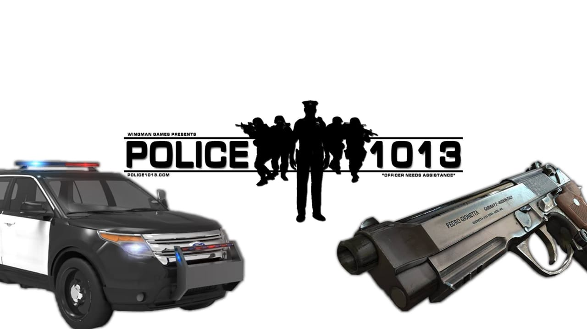

Police
International policing
Most countries are members of the International Criminal Police Organization (Interpol), established to detect and fight transnational crime and provide for international co-operation and co-ordination of other police activities, such as notifying relatives of the death of foreign nationals. Interpol does not conduct investigations or arrests by itself, but only serves as a central point for information on crime, suspects and criminals. Political crimes are excluded from its competencies.
The terms international policing, transnational policing, and/or global policing began to be used from the early 1990s onwards to describe forms of policing that transcended the boundaries of the sovereign nation-state (Nadelmann, 1993),[90] (Sheptycki, 1995).[91] These terms refer in variable ways to practices and forms for policing that, in some sense, transcend national borders. This includes a variety of practices, but international police cooperation, criminal intelligence exchange between police agencies working in different nation-states, and police development-aid to weak, failed or failing states are the three types that have received the most scholarly attention.
Historical studies reveal that policing agents have undertaken a variety of cross-border police missions for many years (Deflem, 2002).[92] For example, in the 19th century a number of European policing agencies undertook cross-border surveillance because of concerns about anarchist agitators and other political radicals. A notable example of this was the occasional surveillance by Prussian police of Karl Marx during the years he remained resident in London. The interests of public police agencies in cross-border co-operation in the control of political radicalism and ordinary law crime were primarily initiated in Europe, which eventually led to the establishment of Interpol before the Second World War. There are also many interesting examples of cross-border policing under private auspices and by municipal police forces that date back to the 19th century (Nadelmann, 1993).[90] It has been established that modern policing has transgressed national boundaries from time to time almost from its inception. It is also generally agreed that in the post–Cold War era this type of practice became more significant and frequent (Sheptycki, 2000).[93]
Not a lot of empirical work on the practices of inter/transnational information and intelligence sharing has been undertaken. A notable exception is James Sheptycki's study of police cooperation in the English Channel region (2002),[94] which provides a systematic content analysis of information exchange files and a description of how these transnational information and intelligence exchanges are transformed into police case-work. The study showed that transnational police information sharing was routinized in the cross-Channel region from 1968 on the basis of agreements directly between the police agencies and without any formal agreement between the countries concerned. By 1992, with the signing of the Schengen Treaty, which formalized aspects of police information exchange across the territory of the European Union, there were worries that much, if not all, of this intelligence sharing was opaque, raising questions about the efficacy of the accountability mechanisms governing police information sharing in Europe (Joubert and Bevers, 1996).[95]
Studies of this kind outside of Europe are even rarer, so it is difficult to make generalizations, but one small-scale study that compared transnational police information and intelligence sharing practices at specific cross-border locations in North America and Europe confirmed that low visibility of police information and intelligence sharing was a common feature (Alain, 2001).[96] Intelligence-led policing is now common practice in most advanced countries (Ratcliffe, 2007)[97] and it is likely that police intelligence sharing and information exchange has a common morphology around the world (Ratcliffe, 2007).[97] James Sheptycki has analyzed the effects of the new information technologies on the organization of policing-intelligence and suggests that a number of 'organizational pathologies' have arisen that make the functioning of security-intelligence processes in transnational policing deeply problematic. He argues that transnational police information circuits help to "compose the panic scenes of the security-control society".[98] The paradoxical effect is that, the harder policing agencies work to produce security, the greater are feelings of insecurity.
Police development-aid to weak, failed or failing states is another form of transnational policing that has garnered attention. This form of transnational policing plays an increasingly important role in United Nations peacekeeping and this looks set to grow in the years ahead, especially as the international community seeks to develop the rule of law and reform security institutions in States recovering from conflict (Goldsmith and Sheptycki, 2007)[99] With transnational police development-aid the imbalances of power between donors and recipients are stark and there are questions about the applicability and transportability of policing models between jurisdictions (Hills, 2009).[100]
Perhaps the greatest question regarding the future development of transnational policing is: in whose interest is it?[citation needed] At a more practical level, the question translates into one about how to make transnational policing institutions democratically accountable (Sheptycki, 2004).[101] For example, according to the Global Accountability Report for 2007 (Lloyd, et al. 2007) Interpol had the lowest scores in its category (IGOs), coming in tenth with a score of 22% on overall accountability capabilities (p. 19).[102] As this report points out, and the existing academic literature on transnational policing seems to confirm, this is a secretive area and one not open to civil society involvement
The police are a constituted body of persons empowered by a state, with the aim to enforce the law, to ensure the safety, health and possessions of citizens, and to prevent crime and civil disorder.
Their lawful powers include arrest and the use of force legitimized by the state via the monopoly on violence. The term is most commonly associated with the police forces of a sovereign state that are authorized to exercise the police power of that state within a defined legal or territorial area of responsibility. Police forces are often defined as being separate from the military and other organizations involved in the defense of the state against foreign aggressors; however, gendarmerie are military units charged with civil policing. Police forces are usually public sector services, funded through taxes.
Law enforcement is only part of policing activity.Policing has included an array of activities in different situations, but the predominant ones are concerned with the preservation of order.[5] In some societies, in the late 18th and early 19th centuries, these developed within the context of maintaining the class system and the protection of private property. Police forces have become ubiquitous in modern societies. Nevertheless, their role can be controversial, as they may be involved to varying degrees in corruption, police brutality and the enforcement of authoritarian rule.
A police force may also be referred to as a police department, police service, constabulary, gendarmerie, crime prevention, protective services, law enforcement agency, civil guard, or civic guard. Members may be referred to as police officers, troopers, sheriffs, constables, rangers, peace officers or civic/civil guards. Ireland differs from other English-speaking countries by using the Irish language terms Garda (singular) and Gardaí (plural), for both the national police force and its members. The word "police" is the most universal and similar terms can be seen in many non-English speaking countries.
Numerous slang terms exist for the police. Many slang terms for police officers are decades or centuries old with lost etymology. One of the oldest, "cop", has largely lost its slang connotations and become a common colloquial term used both by the public and police officers to refer to their profession.
Some text about me in culpa qui officia deserunt mollit anim..
Popular Post

